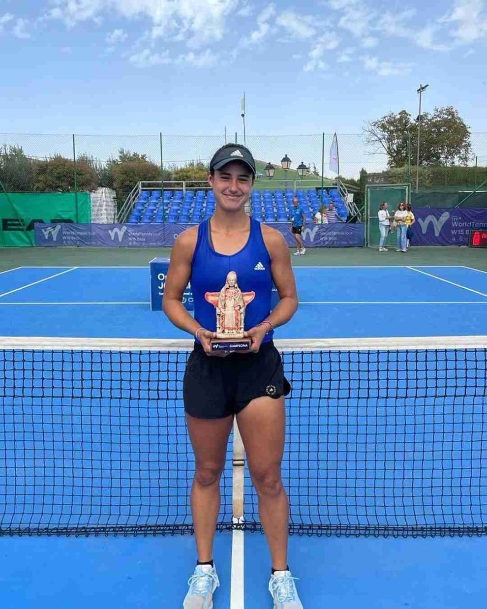

23 octubre, 2022
La florense de 17 años se consagró en el W15 Baza en España en su segunda final ITF y sin ceder sets en toda la semana.
 Noticias las floresLucia Peyre, argentina y cabeza de serie número 2, cumplió los pronósticos al vencer en la final del torneo de Baza en una hora y diecinueve minutos por 6-3 y 6-3 a Nadya Kolb, tenista ucraniana. Tras este resultado, Peyre es la nueva campeona del torneo de Baza. Kolb consiguió quebrar 2 veces el saque a su contrincante, mientras que la jugadora argentina, por su parte, lo consiguió 5 veces. Además, la tenista argentina tuvo un 55% de efectividad en el primer servicio, cometió 2 dobles faltas y consiguió el 62% de los puntos al saque, mientras que su rival obtuvo un 56% de efectividad, hizo 2 dobles faltas y logró ganar el 48% de los puntos al saque. El torneo ITF Spain 25A tiene lugar sobre pista dura al aire libre y durante el transcurso del mismo se ven las caras un total de 56 jugadoras. Además, su celebración se produce del 2 al 9 de octubre en Baza.
23 octubre, 2022
Fiorella junto a Francesca Floriani se coronaron, representando a la Selección Argentina, Campeonas del Panamericano de Menores de Pádel Brasil 2022. Lo hicieron en categoría sub 14 y junto a Pía Gosteli, y Lourdes Flores, fueron claves, ya que siempre sumaron su punto para el equipo al ganar todos los partidos en cada una de las instancias.